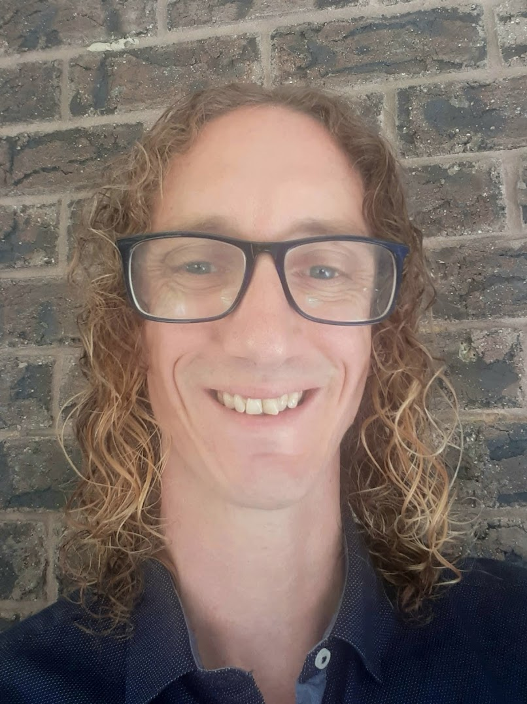

Contact
Student Number - 3941189
Email - s3941189@student.rmit.edu.au
Github - Adrian-Bell
Phone - 0458 417 525
Bio
I currently live in Far North Queensland with my wife and two young boys, having moved here from Northern Ireland in 2007. Although I have always had an interest in computers my previous career has been as a Chef. After completing my apprenticeship in commercial cookery in Northern Ireland I worked in a diverse range of environments in Australia and New Zealand. I am currently running a delivered meals service to elderly and disabled clients with an indigenous community advancement cooperative, which has proved to be a rewarding job and an excellent opportunity to give something back to the community. I have always had a passion for the outdoors, and have a particular interest in nature photography. I have previously run a photography business in the Daintree Rainforest, where I lived in a completely off-grid home for around ten years. Until the launch of satellite NBN in 2015 the only mainstream communication option there was a landline telephone, which has given me a very sincere appreciation of the importance of access to reliable I.T. in the modern world.